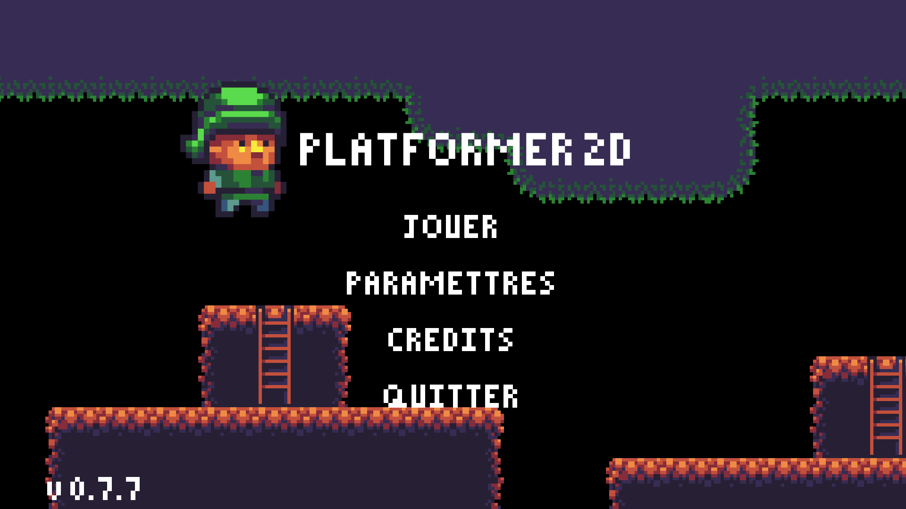
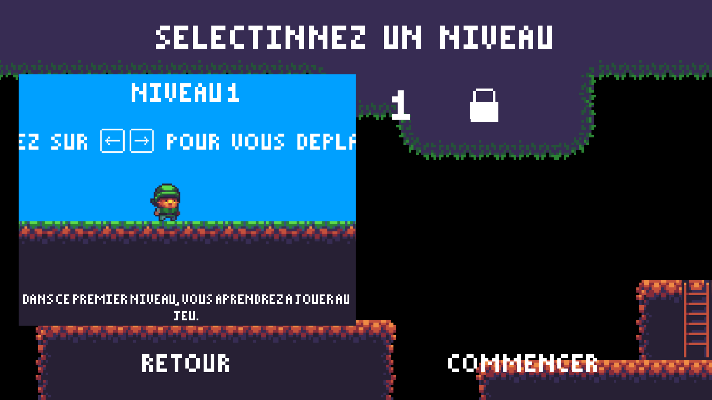
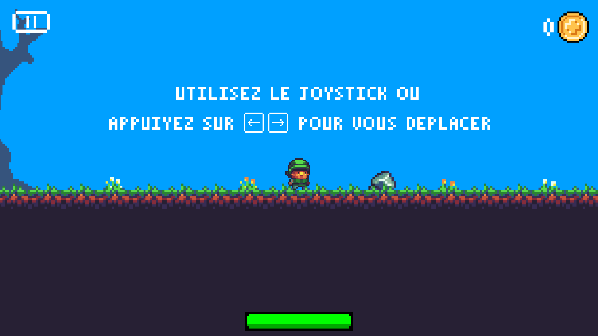
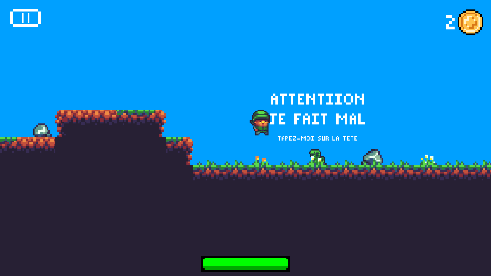
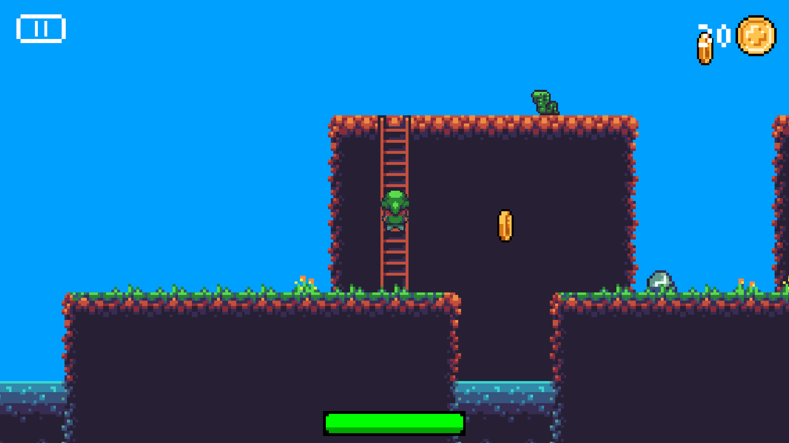

Jeu de plateforme en 2D
J'ai réaliser ce projet dans le but de découvrir et prendre en main le logiciel Unity. J'ai donc suivi des tutoriels pour apprendre les bases du logiciel, ainsi que la programmation en C#, le langage utilisé par Unity. C'est ainsi que j'ai créé mon tout premier jeu vidéo : Un jeu de plateforme en 2D dans le style de Mario Bros.

J'ai réaliser plusieurs niveaux. Au début, seul le premier niveau est débloqué. Pour débloquer les autres niveaux, le joueur doit terminer les niveaux précédant.


Le principe du jeu est simple : le joueur peux déplacer un personnage, qui doit atteindre la fin du niveau en vie. Un tutoriel simple permet aux nouveaux joueurs de prendre en main facilement les commandes et de rapidement savoir les objectif du jeu.
De nombreux obstacles se dressent devant le joueur ! Le premier d'entre eux est un petit serpent qui fait des dégâts au joueur si il se fait toucher. Ce serpent peux être vaincu en sautant sur sa tête.


Le joueur a la possibilité de monter à des échelles, le permettant d'atteindre des lieux inaccessible autrement.